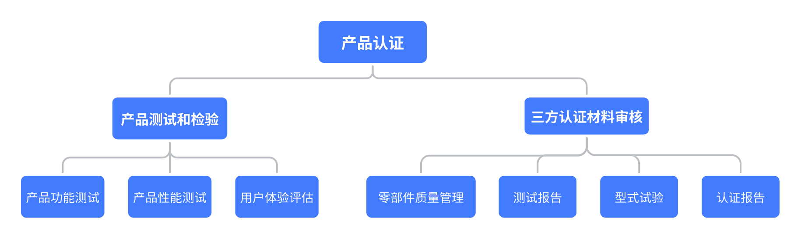
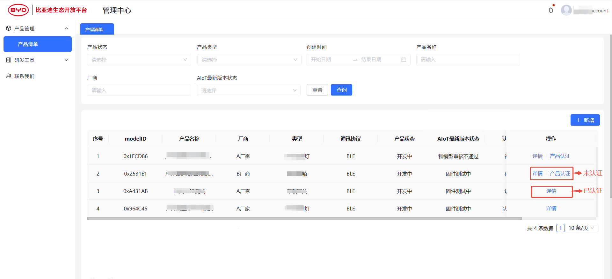
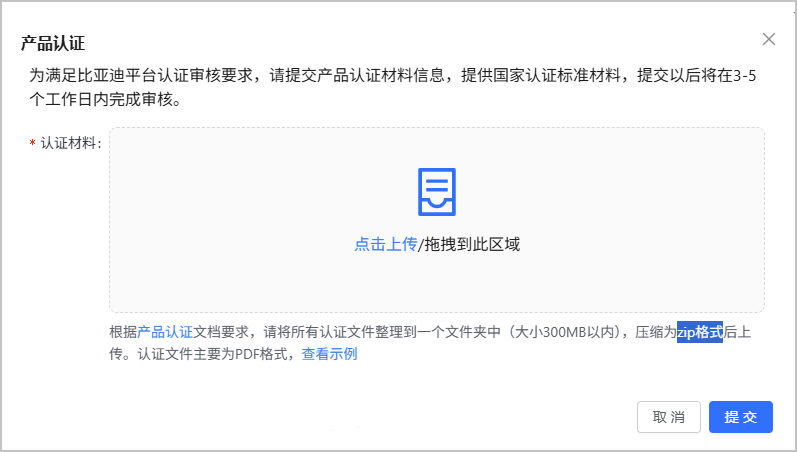
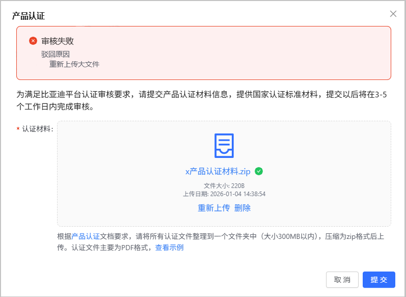

产品认证
提示：产品认证的前提是开发者已经成功完成产品开发，并和比亚迪完成一系列商务合作事宜（例如供应商资质审核和商务协议签署）。
本章节面向直连接入产品，和不具备车机通讯能力的产品（如生态硬件接口某些不具备通讯能力的外接件）。
比亚迪为了保障产品上架和发布的可追溯性、正确性、完整性、规范性，为开发者提供AIoT业务相关产品验收认证的服务。服务内容涵盖对产品进行全面检查、测试与评估，以确认其是否符合预定的规格、标准、质量要求与用户期望。验收认证包含“产品测试和检验”和“三方认证材料审核”两部分，两者无先后依赖关系，可并行推进。为了提升整体认证效率，请开发者尽早提供三方认证材料，并按对接人要求提供不少于 5 个样品。只有通过验收认证全部环节的产品，方可发布与上架。对于不具备通讯能力的非 IoT 产品（仅含固定、供电功能），须保证其在无线通讯以外的产品性能满足相应要求。

图 1-1 产品认证内容
1. 产品测试和检验
产品测试和检验包括：产品功能测试、产品性能测试、用户体验评估。
1.1 产品功能测试
直连接入产品的功能测试主要包括：
（1）IoT产品与车机（或手机）非连接状态下，测试该产品本身全部功能状态显示和操控；
（2）IoT产品与车机（或手机）连接的状态下，通过车机智慧物联App（或手机App）控制IoT产品，和显示该IoT产品的各种信息；
（3）IoT产品与车机连接的状态下，通过车机语音助手控制IoT产品，和反馈IoT产品的部分信息。
1.2 产品性能测试
产品性能测试包括但不限于车机交互性能测试、环境适应性测试、电气安全测试。例如IoT产品与车机交互的响应时效性，压力测试的稳定性，极端工况验证，电源可靠性等。
1.3 用户体验评估
比亚迪内部用户研究团队针对产品进行评估，并输出体验报告。
2. 三方认证材料审核
- 计划上架/发布的IoT产品，开发者需要在比亚迪生态开放平台提交三方认证资料，并通过比亚迪的材料审核。
- 计划上架/发布的不具备车机通讯能力的产品，开发者需要将三方认证材料提交给比亚迪接口人，并通过比亚迪的材料审核。如您还没有比亚迪接口人，请提交工单与我们建联。
2.1 三方认证材料介绍
三方认证材料主要涉及4个方面任务卡：产品质量管理、测试报告、型式试验、认证报告。每个方面任务卡对应的具体材料名称，请见表1. AIoT开发者需要提交的三方资料。
| 编号 | 任务卡 | 提交资料名称 |
|---|---|---|
| 1 | 产品质量管理 | 外观检查报告 |
| 2 | 全尺寸检验报告 | |
| 3 | 测试报告 | 气味性测试报告 |
| 4 | ELV测试报告 | |
| 5 | 软件测试报告 | |
| 6 | 型式试验 | 可靠性、环境、震动、EMC |
| 7 | 认证报告 | 认证报告（3C,CE,FCC等） |
表 2-1. AIoT开发者需要提交的三方资料
注意：上表涵盖了所有IoT设备品类需要提供的主要三方认证材料，不同的IoT产品需要提交的材料不同，和所属产品的属性及行业标准规范有关，需要提交的具体资料名称由比亚迪对接人告知。
2.2 三方认证材料提交
直连接入的产品，在开放平台提交三方认证材料的路径：【管理中心-AIoT服务平台-产品接入-产品管理】新建产品后操作：产品认证。。
（1）未提交三方认证材料审核的产品，其“操作”列显示“产品认证”的按钮，如下图2-1所示，点击“产品认证”，弹出如下图 2-2 上传认证材料的弹窗。开发者可在此处提交认证材料，认证材料主要为PDF格式文件，所有认证材料放入一个文件夹，然后压缩为Zip文件上传。
（2）材料审核失败需要重新审核的产品，其“操作”列显示“重新认证”的按钮；
（3）如果产品提交材料后待审核或已通过三方认证材料审核，其“操作”列不显示“产品认证”或“重新认证”按钮。

图 2-1 三方认证材料提交入口

图 2-2 上传产品认证材料
无论审核成功或失败，开发者的消息中心（标题栏右上角）都会收到三方认证材料审核结果的产品消息。如果审核失败，在重新认证的弹窗内会显示审核失败驳回的原因，如下图2-3所示。

图 2-3 重新认证